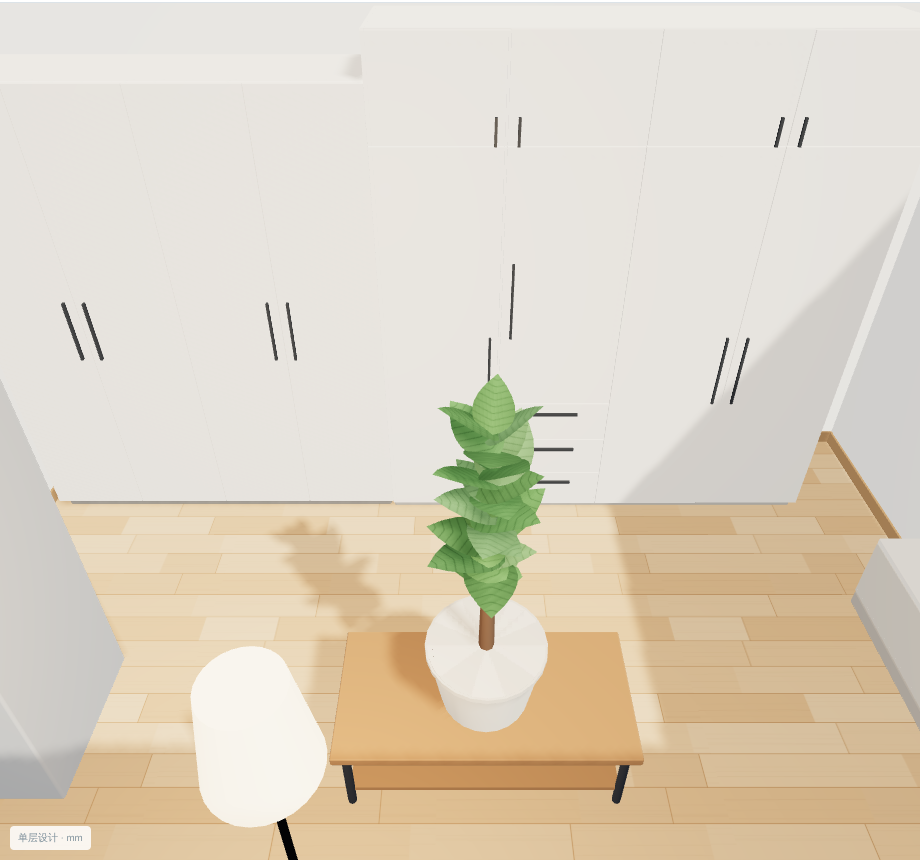
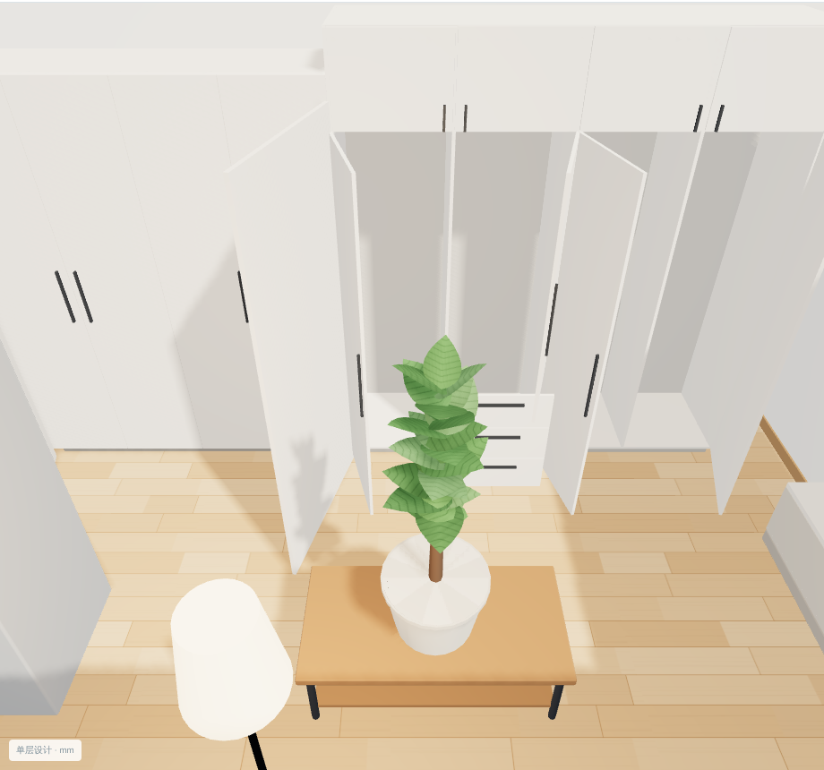
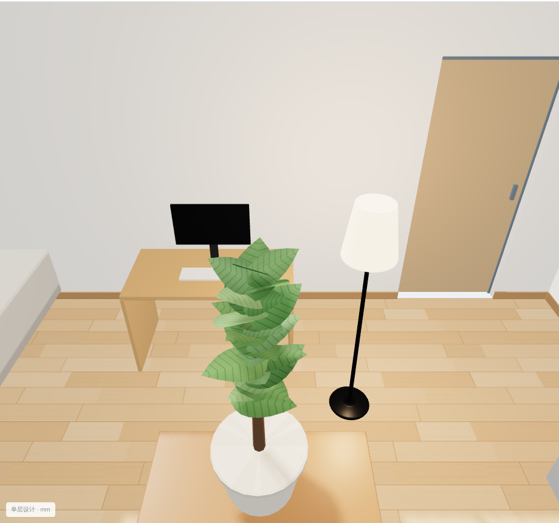
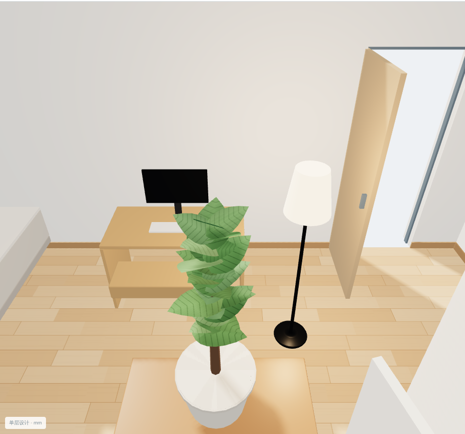
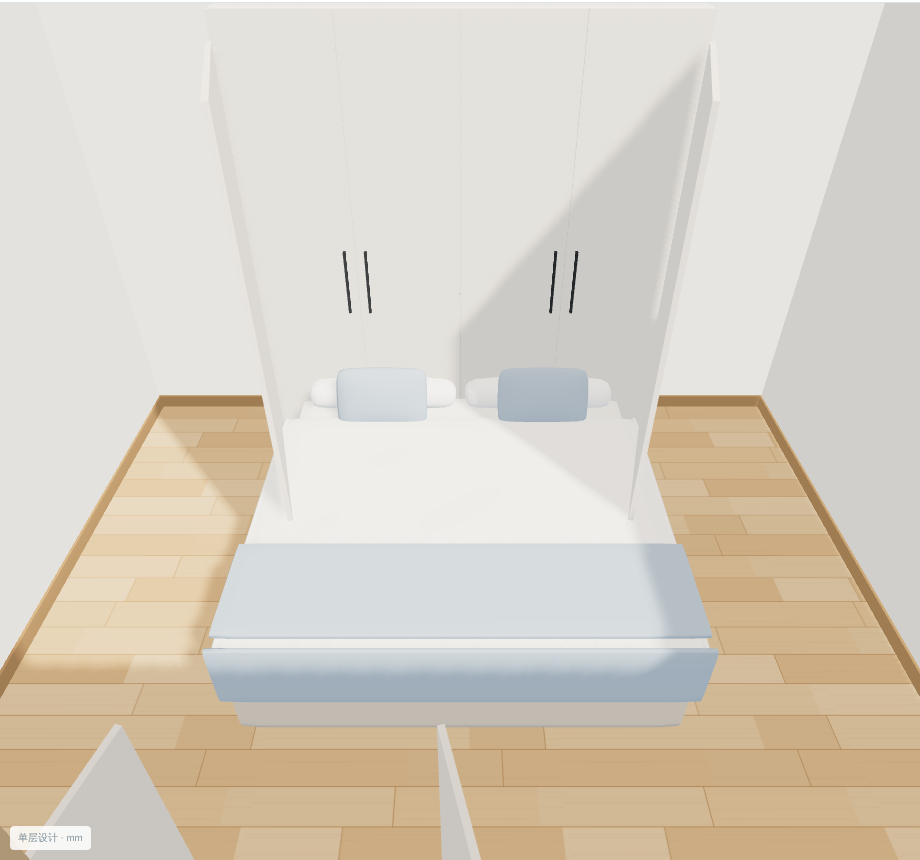

ActiScape P1 3D 可交互动作验收
开门 / 开衣柜 / 开柜门 / 拉抽屉 / 一键全开检验 · 2026-11-10

衣柜关闭主卧北墙：独立衣柜 + 定制衣柜

一键开启全部门柜柜门绕铰链开启 ±75°，拉手随门扇移动

门与书桌抽屉关闭南墙门、书桌、落地灯、茶几上的绿植

门扇开启 + 抽屉拉出门扇 90°、抽屉沿 +Z 拉出 55% 深度

动作包络检验：把不合理布局直接暴露出来
同一套“一键全开”用在床正对衣柜的冲突场景，3D 里能直接看到柜门撞床；检查面板同时给出确定性报错：
- OPENABLE_FRONT_BLOCKED 衣柜正前方开启净空仅 0 mm（需 600 mm），被双人床占用
- DOOR_CABINET_CONFLICT 门扇扫掠区与鞋柜开启包络冲突
- DOORWAY_BLOCKED 鞋柜占用门洞内侧 800 mm 净空
- POSSIBLE_OVERLAP 衣柜与双人床轮廓重叠
净空计算为矩形/四分之一圆弧包络，不做刚体动力学；每间房仍通过 Candidate → CheckScene → Commit 单事务提交。